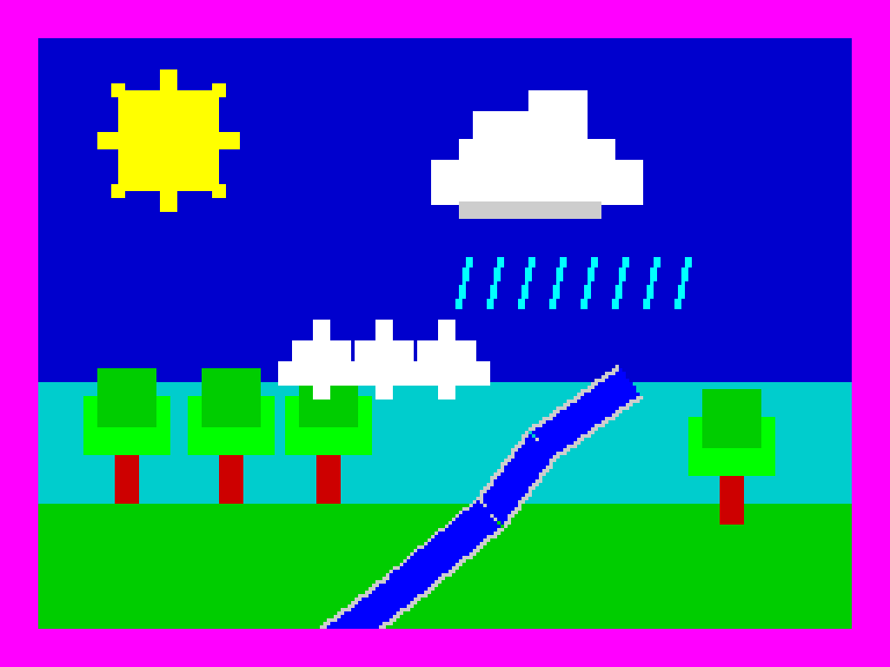

Bienvenida

Bienvenido a esta unidad didáctica sobre el ciclo del agua, preparada por el Área de Tecnología Educativa de la Consejería de Educación, Formación Profesional, Actividad Física y Deportes del Gobierno de Canarias.
Aquí aprenderás las cuatro fases principales del ciclo — evaporación, condensación, precipitación y recogida — y podrás poner a prueba lo aprendido con un par de actividades.
El estilo visual retro está inspirado en la estética del Sinclair ZX Spectrum 128K. Activa el modo oscuro con el botón del sol y juega con las franjas y los scanlines desde el engranaje de la derecha.
▶ abrir en eXeLearning ↓ descargar estilo